Workshop Manual ➭ GENERAL INFORMATION ➭ GENERAL INFORMATION ➭ ELECTRICAL SYSTEM
ELECTRICAL SYSTEM
id000000000500
Electrical Parts
Battery cable
• Before disconnecting connectors or removing electrical parts, disconnect the negative battery cable.
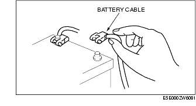
Wiring Harness
• To remove the wiring harness from the clip in the engine room, pry up the hook of the clip using a flathead screwdriver.
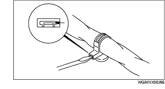
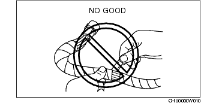
• Do not remove the wiring harness protective tape. Otherwise, the wires could rub against the body, which could result in water penetration and electrical shorting.
Connectors
Disconnecting connectors
• When disconnecting a connector, grasp the connectors, not the wires.
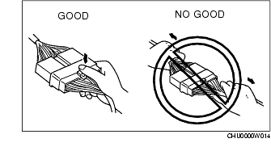
• Connectors can be disconnected by pressing or pulling the lock lever as shown.
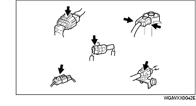
Locking connector
• When locking connectors, listen for a click indicating they are securely locked.
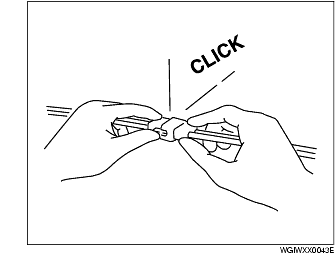
Inspection
• When a tester is used to inspect for continuity or measuring voltage, insert the tester probe from the wiring harness side.
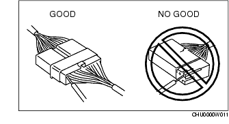
• Inspect the terminals of waterproof connectors from the connector side since they cannot be accessed from the wiring harness side.
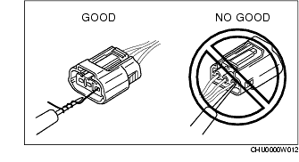
• To prevent damage to the terminal, wrap a thin wire around the tester probe before inserting into terminal.
Terminals
Inspection
• Pull lightly on individual wires to verify that they are secured in the terminal.
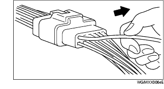
Replacement
• Use the appropriate tools to remove a terminal as shown. When installing a terminal, be sure to insert it until it locks securely.
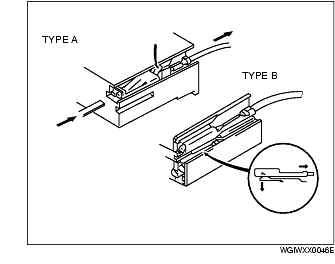
• Insert a thin piece of metal from the terminal side of the connector and with the terminal locking tab pressed down, pull the terminal out from the connector.
Sensors, Switches, and Relays
• Handle sensors, switches, and relays carefully. Do not drop them or strike them against other objects.
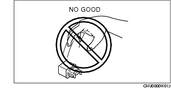
Wiring Harness
Wiring color codes
• Two-color wires are indicated by a two-color code symbol.
• The first letter indicates the base color of the wire and the second is the color of the stripe.
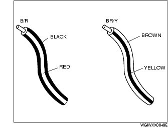
Fuse
Replacement
• When replacing a fuse, be sure to replace it with one of the same capacity. If a fuse malfunctions again, the circuit probably has a short and the wiring should be inspected.
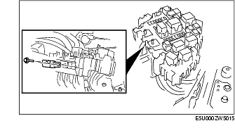
• Be sure the negative battery terminal is disconnected before replacing a main fuse. • When replacing a pullout fuse, use the fuse puller.
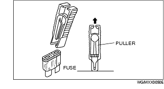
Viewing orientation for Connectors
• The viewing orientation for connectors is indicated with a symbol.
• The figures showing the viewing orientation are the same as those used in Wiring Diagrams.
• The viewing orientation are shown in the following three ways:
Part-side connector
The viewing orientation for part-side connectors is from the terminal side.
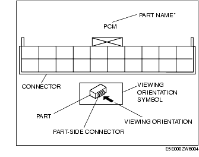
* : Part names are shown only when there are multiple connector drawings.
Vehicle harness-side connector
The viewing orientation for vehicle wiring harness-side connectors is from the wiring harness side.
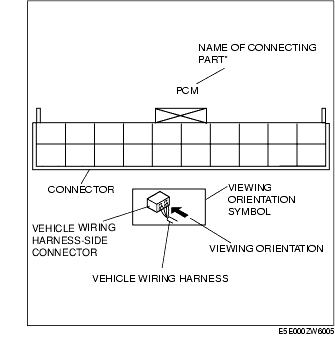
* : Part names are shown only when there are multiple connector drawings.
Other
When it is necessary to show the terminal side of the vehicle wiring harness-side connectors, such as the following connectors, the viewing orientation is from the terminal side.
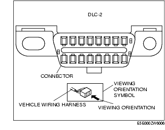
• Main fuse block and the main fuse block relays • Data link connector • Check connector • Relay box
Electrical Troubleshooting Tools
Jumper wire
• Do not connect a jumper wire from the power source line to a body ground. This may cause burning or other damage to wiring harnesses or electronic components.
• A jumper wire is used to create a temporary circuit. Connect the jumper wire between the terminals of a circuit to bypass a switch.
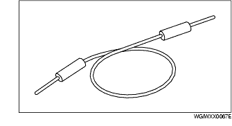
Voltmeter
• The DC voltmeter is used to measure circuit voltage. A voltmeter with a range of 15 V or more is used by connecting the positive (+) probe (red lead wire) to the point where voltage will be measured and the negative (-) probe (black lead wire) to a body ground.
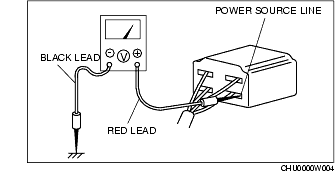
Ohmmeter
• Do not connect the ohmmeter to any circuit where voltage is applied. This will damage the ohmmeter.
• The ohmmeter is used to measure the resistance between two points in a circuit and to inspect for continuity and short circuits.
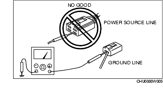
Precautions Before Welding
A vehicle has various electrical parts. To protect the parts from excessive current generated when welding, be sure to perform the following procedure.
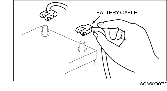
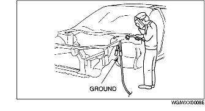